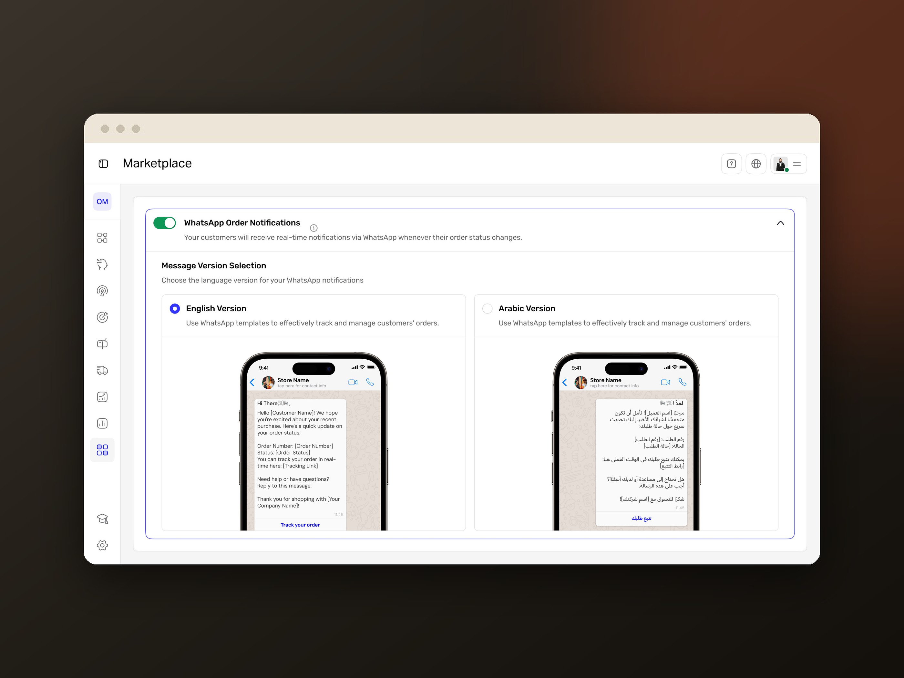

01Shopify Connector · Solo Product Designer
WhatsApp automation that turns itself on
The problem: small merchants lost sales when key order moments went silent. I designed a connector that messages customers on WhatsApp automatically, in English or Arabic, with zero setup.
≥70%
Activation target
+15%
Recovery target
≥85%
Open-rate target
ResearchUser FlowsUI DesignBilingual (EN/AR)